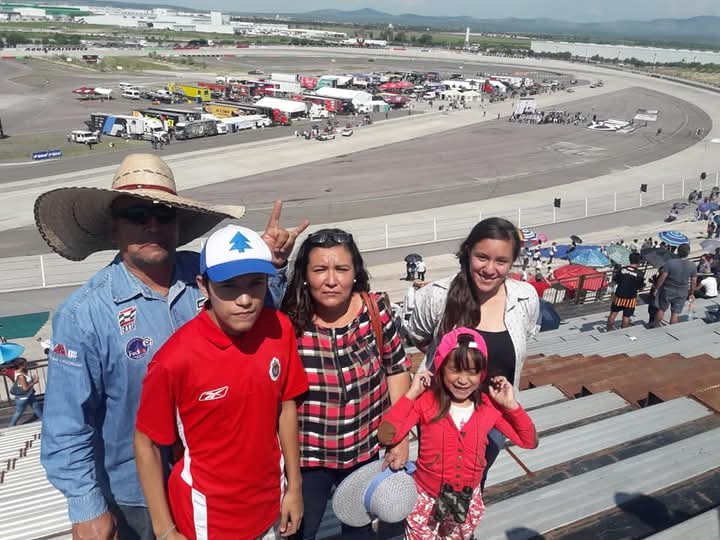
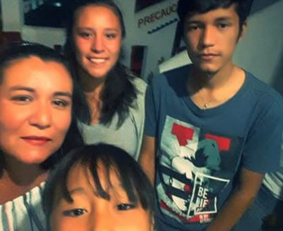
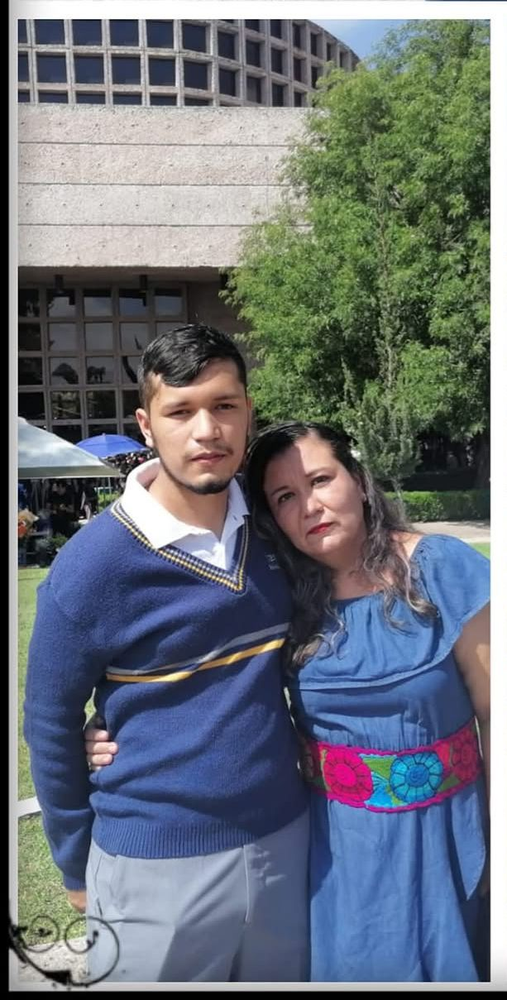

Gracias por todo lo que no has enseñado durante toda nuestra vida,
sabes como hacernos feliz, eres el centro de mustra familia, gracias por
estar con nosotros.

Gracias por todos los momentos que hemos pasado a tu lado, incluso en las peleas
siempre hemos salido adelante, somos muy undios y gracias a ti hemos sacado todo
nuestro potenciay s hacer lo que mas nos gusta.

Gracias por cuidarnos siempre desde muy pequeños y sacrificar muchas cosas por
nosotros, te amaremos para toda la vida y sabes que siempre estaremos contigo en
las buenas y las malas.
Jose Miguel

Gracias por apoyarme en todas mis metas y estar siempre conmigo, no hay palablas
para agradecerte, ya que eres muy importante en mi vida, espero y tenerte para siempre,
te quiero mucho y siempre estare muy agradecido contigo por apoyarme en todo lo que se me
ha cruzado en la vida, muchas garacias po aguantarme en todos los aspectos, te amo mamá.
Eres la mejor mamá del mundo <3
Celebrando a la mejor mamá del mundo